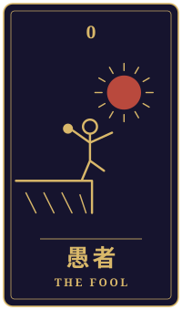

年輪
物語の手前に、ひとつの相談がありました。三枚のカードをめぐるやりとりを、聞こえたままに書き留めています。
持ち込まれた相談
三年前、妻の仕事の都合で北の小さな町に越してきました。借りた家の庭に、前に住んでいたおばあさんが大事にしていたリンゴの木があります。今朝、近くの町で熊が庭のリンゴを食べたと聞き、近所の人からは「切ったほうがいい」と言われました。四歳の娘は毎年あの実を楽しみにしています。切れば安心なのはわかっています。でも、正直に言うと、この町にまだ馴染めていないのは私のほうで、木を切ることが「ここに根を張らない」という自分への言い訳になりそうで怖いのです。かといって残して何かあったら、と思うと眠れません。私はこの木とこの町に、どう向き合えばいいのでしょうか。
カードの読み解き

過去
恋人・逆位置
過去の位置に出た恋人の逆位置は、迷いや心のすれ違い、いくつもの道の間で揺れる気持ちを表すカードです。三年前、奥さまのお仕事に合わせてこの町に来られてから、あなたはご家族のために選んだ暮らしの中で、どこか自分の心と場所が噛み合っていないと感じてきたのかもしれませんね。その迷いは、あなたが誠実に暮らしてきたからこそ生まれたものとも言えるでしょう。

現在
教皇・逆位置
現在の教皇の逆位置は、決まりや「こうあるべき」という型への反発を示しています。「木は切ったほうがいい」という周囲の声も、「ここに根を張らなければ」という自分の思いも、どちらも少し硬くなっているところがあるかもしれません。木を切るか残すかという答えを、言葉の形だけで決めようとしていないか、一度ゆっくり見てみるのもよいでしょう。

未来
愚者・逆位置
未来の愚者の逆位置は、勢いで動くことへの注意を促すカードです。眠れないほどの不安を抱えているときほど、「切ってしまえば楽になる」「残して何かあったら取り返しがつかない」と、急いで答えを出したくなるものです。どちらを選ぶにしても、急がず順を追って考えることが大切になりそうです。
最後に
このカードだけで、木を切るかどうかの答えが出るわけではありません。熊への備えは、町の役場や専門の方に実際の状況を確かめながら、安全を第一に決めていくのも一つの方法です。そして、この木がおばあさんから受け継がれてきたこと、娘さんが毎年その実を楽しみにしていることは、あなたがこの町で少しずつ根を張ってきた証でもあるように思えます。木を切ることが言い訳になるかどうかは、その決断をどんな思いから選ぶのかによって、また違った形になっていくのかもしれません。
帰り際の問い今の自由は、何から逃げるためのものか。
読み解きは「月夜のアルカナ」が、この相談と三枚から返したものです。小説は同じ三枚を、別の角度から書いています。相談者は物語のための架空の人物です。相談文・読み解き・短編本文は、生成AIを使って制作しています。
物語に戻る